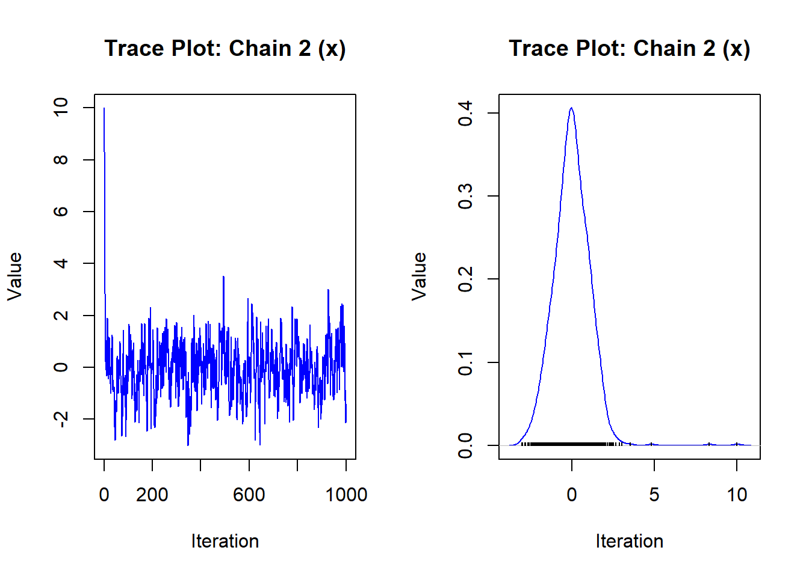
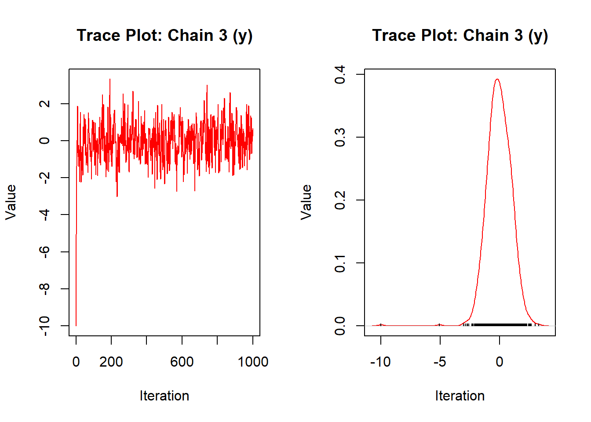
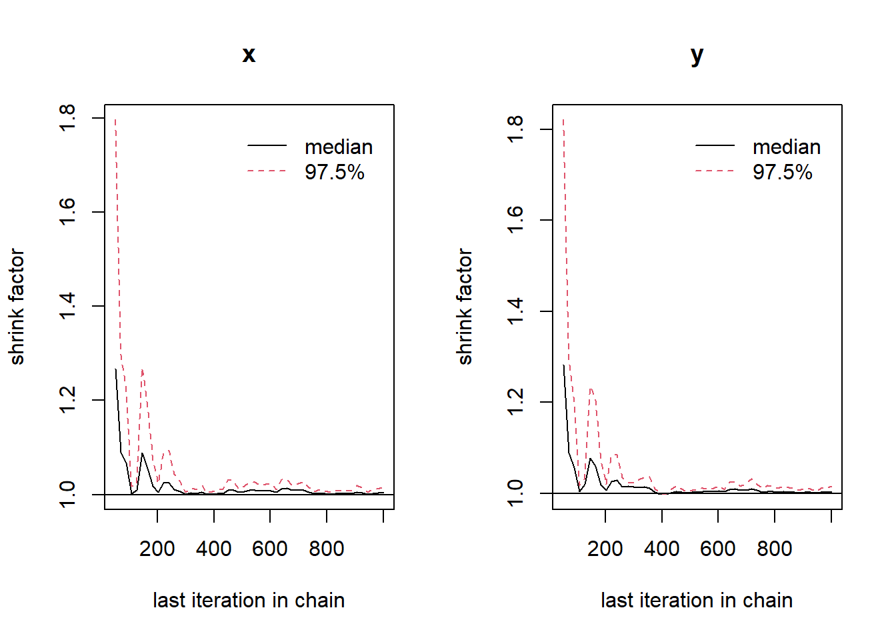

Write equations without marginal likelihood and introduce the proportional sign …
4.5 Generative Models
A generative model is designed to generate new data points by capturing the intricate probability distributions of existing datasets. By learning these distributions, the model can produce data that reflects the characteristics of original datasets, simulating realistic examples. A generative model can also be used to understand how a set of observed data could have arisen from a set of underlying causes, which we will discuss more later in this course.
In Bayesian modeling, generative models are particularly useful as they provide a framework for estimating the likelihood of data under different hypotheses. This capability enhances Bayesian inference processes, allowing for more effective prior and posterior distribution updates. The flexibility of generative models in simulating various scenarios can also improve the robustness and accuracy of Bayesian models, ultimately refining the decision-making and predictive capabilities inherent in Bayesian analysis.
Note that, in this course, we use “generative model” broadly to consider the origins of a particular dataset. However, this term also has a more specific definition, especially as it contrasts with “discriminative models”, for details see Bernardo et al. (2007).
Let’s explain this using the example we discussed earlier related to the vaccine efficacy rate,where we collected data from \(n=10\) individuals and the vaccine was effective for 8 individuals. Recall that we also consider a prior probabilty for the effectiveness, which was \(0.7\). Given this information we now recreate the data.
Data generation:
In a generative modelling context, we simulate data for these 10 individuals by considering success probability \(\theta = 0.8\).
Code
# Parameters for the Binomial modeln <-10# Number of individualstheta <-0.8# Probability of successsize <-1# Number of experiments/replications# Generate data from the Binomial distributionset.seed(123) # For reproducibilitydata <-rbinom(size, n, theta)# Number of successpaste("Number of success: ",data," out of ",n, "individuals")
[1] "Number of success: 9 out of 10 individuals"
We can see that our simulation using one replication yields probability 0.9, whereas actual data shows \(\theta = 0.8\). Hence, to reflect actual data we need to simulate data for multiple replications, which yields an average value for \(\theta = 0.8\).
Code
# Load necessary libraryoptions(warn=-1)if (!requireNamespace("ggplot2", quietly =TRUE)) install.packages("ggplot2")library(ggplot2)# Parameters for the Binomial modeln <-10# Number of individualstheta <-0.8# Probability of successsize <-1000# Number of experiments/replications# Generate data from the Binomial distributionset.seed(123) # For reproducibilitydata <-rbinom(size, n, theta)# Display the first few resultsprint("First 10 simulated outcomes:")
# Plot a histogram of the datadf <-data.frame(Successes = data)ggplot(df, aes(x = Successes)) +geom_histogram(breaks =seq(-0.5, n +0.5, by =1),fill ="skyblue",color ="black",boundary =-0.5 ) +scale_x_continuous(breaks =0:n,name ="Number of successes" ) +labs(title =paste("Histogram of Simulated Binomial Data (n =", n, ", θ =", theta, ")"),y ="Frequency",x ="Number of successes" ) +theme_minimal()
Now, for instance we … check Mc
4.6 Traceable and Untraceable Solutions
A traceable solution manifests when the posterior distribution can be explicitly determined in a closed-form mathematical expression, facilitating straightforward analysis. This situation arises particularly when the prior distribution and the likelihood function are chosen such that the posterior distribution remains within a recognized family of probability distributions.
For example, when a conjugate prior is used, the posterior has a known or a same functional form as the prior. This helps to derive posterior parameters easily with simple calculations. This also helps to derive the posterior using exact solutions without relying on numerical or approximation methods. For a Bernoulli model, we have already discussed earlier in Lecture 2, which reflects: \[\begin{align}
\text{Distribution: } & y \sim \text{Ber}(\theta);\\
\text{Likelihood: } & Y = \sum^n y \sim \text{Binomial}(n,\theta);\\
\text{Prior: } & \theta \sim \text{Beta}(a,b);\\
\text{Posterior: } & \theta|Y \sim \text{Beta}(a+\sum^n y,b+n-\sum^n y);\\
\end{align}\]
An untraceable solution emerges in situations where the posterior distribution cannot be expressed in a closed-form expression. This phenomenon occurs when the likelihood function and the prior distribution are incompatible, resulting in the emergence of complex integrals within Bayes’ theorem that are analytically intractable.
For example, use of non-conjugate priors. Often complex likelihood functions, such as those involving hierarchical models, mixture models, or high-dimensional data also yields a posterior form of distribution with untraceable solutions, even if we consider conjugate priors for the model parameters. For a non-Gaussian likelihood, use of a uniform prior also yields untraceable solution.
Traceable Solutions
Untraceable Solutions
Posterior
Closed-form expression
Requires approximation or sampling
Prior-Likelihood Relation
Often relies on conjugacy
No conjugacy needed
Computation
Exact and straightforward
Computationally intensive
Flexibility
Limited (conjugate priors only)
High (any prior-likelihood combination)
4.7 Solving Untraceability
Different types of algorithms have been developed to tackle untraceable solutions. Such as numerical integration, Markov chain Monte Carlo (MCMC), variational inference, Laplace approximation etc. In this couse, we will learn how to use and impliment these algorithms to solve real-life problems. We refer Gelman et al. (2013) Chapter (..) for details on this for those interested to explore more.
In this course, we will focus on learning Markov chain Monte Carlo (MCMC) algorithms, which is a sampling based approach to approximate the posterior distribution when direct sampling is difficult or computationally impractical.
A Markov chain is a stochastic process where the next state depends only on the current state, not on the sequence of states that preceded it. This property is called the Markov property. The transition between states is defined by a transition probability matrix or kernel. Monte Carlo methods involve random sampling to estimate numerical quantities, such as integrals, expectations, or probabilities. MCMC combines this with Markov chains to generate samples.
Some common MCMC algorithms include Metropolis-Hastings (MH) algorithm, Gibbs sampling, Hamiltonian Monte Carlo (HMC) etc. MH is a general MCMC method that generates candidate samples from a proposal distribution. A candidate is accepted or rejected based on an acceptance probability, ensuring the chain converges to the target distribution. Whereas, Gibbs sampling is a special case of the Metropolis-Hastings algorithm. Updates one variable at a time by sampling from its conditional distribution while keeping other variables fixed. The Hamiltonian Monte Carlo (HMC) algorithm uses gradient information from the target distribution to propose new samples, making it more efficient for high-dimensional problems.
Here’s a summary table comparing the Metropolis-Hastings (MH) algorithm, Gibbs Sampling, and Hamiltonian Monte Carlo (HMC), focusing on when each method is most useful:
Metropolis-Hastings (MH)
Gibbs Sampling
Hamiltonian Monte Carlo (HMC)
Applicability
General-purpose; works for most distributions, even when structure is unknown.
Requires easily derived and sampled conditional distributions.
Requires gradients of the target distribution.
Flexibility
Highly flexible; can handle multimodal or complex distributions.
Limited to cases where conditional distributions exist.
Best for smooth, high-dimensional, continuous distributions.
Efficiency
May require many iterations due to rejection.
Efficient for models with structured dependencies.
Highly efficient in high dimensions.
Parameter Tuning
Requires tuning of the proposal distribution (e.g., step size).
No tuning required.
Requires tuning of step size and number of leapfrog steps.
Correlated Variables
Can handle correlated variables with appropriate proposal design.
May struggle with high correlation due to sequential updates.
Handles correlation effectively with gradient-based proposals.
Model Type
Suitable for any distribution, discrete or continuous.
Best for structured models (e.g., hierarchical Bayesian).
Only for continuous, differentiable distributions.
Complexity of Implementation
Relatively simple to implement.
Simple if conditional distributions are available.
More complex due to gradient computations.
Computation Cost Per Step
Low to moderate, depending on the proposal.
Low per iteration.
High due to gradient and Hamiltonian computations.
4.7.2 MCMC convergence diagnostics
If all chains exhibit good mixing and overlap significantly, convergence is likely achieved. For example: A poorly mixed trace might stay in one region for too long or exhibit a trend. Each chain fluctuates randomly, indicating that it explores the target distribution.
Autocorrelation should decay quickly (close to 0 at larger lags), indicating less dependence between consecutive samples. Slow decay indicates that the chain is not exploring efficiently.
Gelman-Rubin Diagnostic \(\hat{R}\) near 1 indicates convergence. Gelman-Rubin Plot will show how \(\hat{R}\) decreases over iterations. A flat line near 1 confirms that all chains have reached the stationary distribution.
4.7.2.1 MH algorithm
We want to sample from a standard normal distribution \(N(0,1)\) using the Metropolis-Hastings algorithm, starting from an arbitrary initial point. This allows us to observe how the MCMC chain gradually converges to the target distribution. We write the target density \(y\sim N(0,1)\) as: \[\begin{align}
p(y) &= \frac{1}{\sqrt{2\pi}}\exp\left(-\frac{y^2}{2}\right)
\end{align}\]
Code
# Load required packageif (!requireNamespace("coda", quietly =TRUE)) install.packages("coda")library(coda)# Metropolis-Hastings functionmetropolis_hastings <-function(target_density, proposal_sd, n_iter, initial_value) { chain <-numeric(n_iter) chain[1] <- initial_valuefor (i in2:n_iter) { proposal <-rnorm(1, mean = chain[i -1], sd = proposal_sd) acceptance_prob <-min(1, target_density(proposal) /target_density(chain[i -1]))if (runif(1) < acceptance_prob) { chain[i] <- proposal } else { chain[i] <- chain[i -1] } }return(chain)}# Define the target density (Standard Normal)target_density <-function(x) dnorm(x, mean =0, sd =1)# Run multiple chainsset.seed(123)n_iter <-10000n_chains <-3chains <-list(chain1 =metropolis_hastings(target_density, proposal_sd =1, n_iter, initial_value =10),chain2 =metropolis_hastings(target_density, proposal_sd =1, n_iter, initial_value =-10),chain3 =metropolis_hastings(target_density, proposal_sd =1, n_iter, initial_value =5))# Convert chains to mcmc.list (for coda package)mcmc_chains <-mcmc.list(mcmc(chains$chain1),mcmc(chains$chain2),mcmc(chains$chain3))# 1. Trace Plotspar(mfrow =c(1, 3)) # 1 row, 3 columns for each chainfor (i in1:n_chains) {plot(mcmc_chains[[i]], type ="l", col ="blue", main =paste("Trace Plot: Chain", i), xlab ="Iteration", ylab ="Value")}
Code
# 2. Autocorrelation Plotspar(mfrow =c(1, 3)) # Reset to 1 row, 3 columns for autocorrelation plotsfor (i in1:n_chains) {autocorr.plot(mcmc_chains[[i]], main =paste("Autocorrelation: Chain", i), lag.max =50)}
Potential scale reduction factors:
Point est. Upper C.I.
[1,] 1 1
Code
# 4. Gelman-Rubin Plotgelman.plot(mcmc_chains)
4.7.2.2 Gibbs sampling
Let’s use Gibbs Sampling to sample from a bivariate normal distribution where the marginal distributions of each variable are normal, but the two variables are correlated. We’ll then assess the convergence using trace plots, autocorrelation plots, and the Gelman-Rubin diagnostic.
The joint density is the bivariate normal distribution: \[\begin{align}
p(x,y) &= \frac{1}{2\pi\sqrt{1-\rho^2}}\exp\left(-\frac{1}{2(1-\rho^2)}\left(x^2-2\rho x y +y^2 \right) \right)
\end{align}\] where \(\rho\) is the correlation between \(x\) and \(y\)
Code
# Load required libraryif (!requireNamespace("coda", quietly =TRUE)) install.packages("coda")library(coda)# Gibbs Sampling Functiongibbs_sampling <-function(n_iter, rho, initial_values) { x <-numeric(n_iter) y <-numeric(n_iter)# Set initial values x[1] <- initial_values[1] y[1] <- initial_values[2]# Gibbs sampling iterationsfor (i in2:n_iter) {# Sample x given y x[i] <-rnorm(1, mean = rho * y[i -1], sd =sqrt(1- rho^2))# Sample y given x y[i] <-rnorm(1, mean = rho * x[i], sd =sqrt(1- rho^2)) }return(data.frame(x = x, y = y))}# Parametersset.seed(123) # For reproducibilityn_iter <-10000# Number of iterationsrho <-0.8# Correlation between x and yinitial_values <-c(0, 0) # Initial values for x and y# Run three independent Gibbs sampling chainschain1 <-gibbs_sampling(n_iter, rho, c(0, 0))chain2 <-gibbs_sampling(n_iter, rho, c(10, 10))chain3 <-gibbs_sampling(n_iter, rho, c(-10, -10))# Convert chains to mcmc.list (for coda package)mcmc_chains <-mcmc.list(mcmc(as.matrix(chain1)),mcmc(as.matrix(chain2)),mcmc(as.matrix(chain3)))# 1. Trace Plotspar(mfrow =c(2, 3)) # 2 rows, 3 columns for x and y of each chainfor (i in1:3) {plot(mcmc_chains[[i]][, "x"], type ="l", col ="blue",main =paste("Trace Plot: Chain", i, "(x)"), xlab ="Iteration", ylab ="Value")plot(mcmc_chains[[i]][, "y"], type ="l", col ="red",main =paste("Trace Plot: Chain", i, "(y)"), xlab ="Iteration", ylab ="Value")}


Code
# 2. Autocorrelation Plotspar(mfrow =c(2, 3)) # Reset to 2 rows, 3 columns for autocorrelation plotsfor (i in1:3) {autocorr.plot(mcmc_chains[[i]][, "x"], main =paste("Autocorrelation: Chain", i, "(x)"))autocorr.plot(mcmc_chains[[i]][, "y"], main =paste("Autocorrelation: Chain", i, "(y)"))}
Potential scale reduction factors:
Point est. Upper C.I.
x 1 1
y 1 1
Multivariate psrf
1
Code
# 4. Gelman-Rubin Plotgelman.plot(mcmc_chains)

4.7.2.3 HMC
Hamiltonian Monte Carlo (HMC) is a powerful MCMC algorithm that uses information about the gradient of the log-probability density to efficiently sample from complex distributions. Below, we provide an example of implementing HMC using R with the rstan package, which includes a highly optimized implementation of HMC.
For execution on a local, multicore CPU with excess RAM we recommend calling
options(mc.cores = parallel::detectCores()).
To avoid recompilation of unchanged Stan programs, we recommend calling
rstan_options(auto_write = TRUE)
For within-chain threading using `reduce_sum()` or `map_rect()` Stan functions,
change `threads_per_chain` option:
rstan_options(threads_per_chain = 1)
Do not specify '-march=native' in 'LOCAL_CPPFLAGS' or a Makevars file
Attaching package: 'rstan'
The following object is masked from 'package:coda':
traceplot
Code
library(bayesplot)
This is bayesplot version 1.11.1
- Online documentation and vignettes at mc-stan.org/bayesplot
- bayesplot theme set to bayesplot::theme_default()
* Does _not_ affect other ggplot2 plots
* See ?bayesplot_theme_set for details on theme setting
Code
# Generate synthetic dataset.seed(42)true_mu <-5.0true_sigma <-2.0n_samples <-100y <-rnorm(n_samples, mean = true_mu, sd = true_sigma)# Plot the datahist(y, breaks =20, col ="lightblue", main ="Observed Data", xlab ="y")
Code
# Stan model codestan_code <-"data { int<lower=0> N; // Number of observations vector[N] y; // Observed data}parameters { real mu; // Mean real<lower=0> sigma; // Standard deviation}model { mu ~ normal(0, 10); // Prior for mu sigma ~ normal(0, 10); // Prior for sigma y ~ normal(mu, sigma); // Likelihood}"# Prepare data for Stanstan_data <-list(N =length(y),y = y)# Fit the model using Stanfit <-stan(model_code = stan_code,data = stan_data,iter =2000, # Total number of iterations (1000 warmup + 1000 sampling)warmup =1000, # Warm-up iterationschains =3, # Number of Markov chainsseed =42# For reproducibility)
# Summarize the posterior distributionsprint(fit, pars =c("mu", "sigma"))
Inference for Stan model: anon_model.
3 chains, each with iter=2000; warmup=1000; thin=1;
post-warmup draws per chain=1000, total post-warmup draws=3000.
mean se_mean sd 2.5% 25% 50% 75% 97.5% n_eff Rhat
mu 5.07 0 0.21 4.64 4.93 5.07 5.21 5.49 2863 1
sigma 2.11 0 0.15 1.83 2.00 2.10 2.21 2.43 2560 1
Samples were drawn using NUTS(diag_e) at Wed Jan 29 08:07:08 2025.
For each parameter, n_eff is a crude measure of effective sample size,
and Rhat is the potential scale reduction factor on split chains (at
convergence, Rhat=1).
Code
# MCMC plotslibrary(bayesplot)mcmc_trace(fit, pars =c("mu", "sigma"))
Launching ShinyStan interface... for large models this may take some time.
Listening on http://127.0.0.1:3192
Warning: The `size` argument of `element_line()` is deprecated as of ggplot2 3.4.0.
ℹ Please use the `linewidth` argument instead.
Warning: `includeHTML()` was provided a `path` that appears to be a complete HTML document.
✖ Path: html/neff.html
ℹ Use `tags$iframe()` to include an HTML document. You can either ensure `path` is accessible in your app or document (see e.g. `shiny::addResourcePath()`) and pass the relative path to the `src` argument. Or you can read the contents of `path` and pass the contents to `srcdoc`.
Warning: `includeHTML()` was provided a `path` that appears to be a complete HTML document.
✖ Path: html/mcse.html
ℹ Use `tags$iframe()` to include an HTML document. You can either ensure `path` is accessible in your app or document (see e.g. `shiny::addResourcePath()`) and pass the relative path to the `src` argument. Or you can read the contents of `path` and pass the contents to `srcdoc`.
Warning: `includeHTML()` was provided a `path` that appears to be a complete HTML document.
✖ Path: html/rhat.html
ℹ Use `tags$iframe()` to include an HTML document. You can either ensure `path` is accessible in your app or document (see e.g. `shiny::addResourcePath()`) and pass the relative path to the `src` argument. Or you can read the contents of `path` and pass the contents to `srcdoc`.
In week 2 you will be required to collaboratively complete some exercises. To do this, in week 1 you will be allocated into groups of 3-4 and you are encouraged to meet with your group in week 2 by zoom at a mutually beneficial time. Each group has their own discussion board, which you can use to help organise a meet up time. Interacting, discussing, and working through problems with your peers is an important skill for any biostatistician. This is also nice activity to get to know your peers in this online course.
Bernardo, JM, MJ Bayarri, JO Berger, AP Dawid, D Heckerman, AFM Smith, and M West. 2007. “Generative or Discriminative? Getting the Best of Both Worlds.”Bayesian Statistics 8 (3): 3–24.
Gelman, Andrew, John B Carlin, Hal S Stern, David B Dunson, Aki Vehtari, and Donald B Rubin. 2013. Bayesian Data Analysis (3rd Edition). Chapman; Hall/CRC.